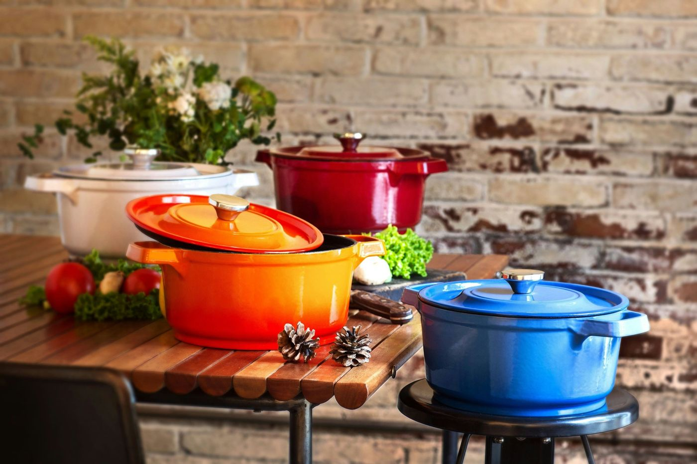
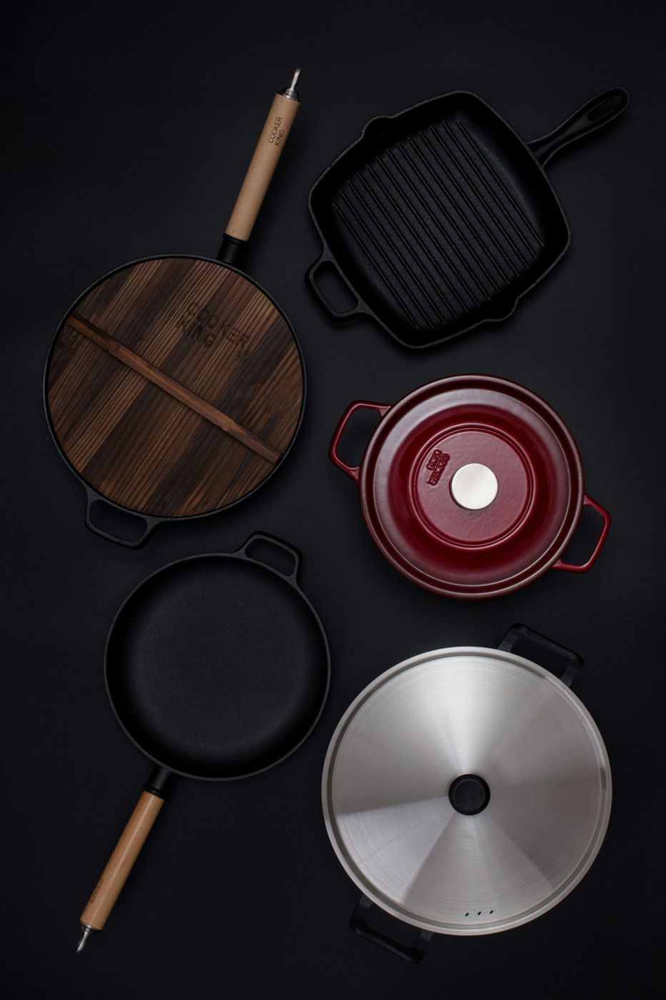

Best for eggs and easy cleanup
A nonstick frying pan
Low fat, little sticking and quick to wash. Replace it when the coating wears, and avoid metal utensils.
- Easy release
- Simple to clean
- Coating wears out
- Not for very high heat
Home / Cookware
Most cooks need only a few good pans. The material decides how it cooks and how you care for it, so choose by the dishes you make most.
Affiliate disclosure: some links on this page are affiliate links. If you buy through them we may earn a commission at no extra cost to you. Read more.

Nonstick is easy for eggs and fish. Stainless steel is durable and browns well. Cast iron and carbon steel sear and last for decades but need seasoning.
Induction cooktops need magnetic bases. Check the product description for induction compatibility.
Check the maximum oven temperature for the pan and its handle and lid, not just the body.
A heavy pan holds heat evenly but is harder to lift. Choose handles that stay cool and feel secure in your hand.
Low fat, little sticking and quick to wash. Replace it when the coating wears, and avoid metal utensils.
Durable, oven safe and good for browning and pan sauces.

Best for searingHolds heat for steaks, cornbread and oven finishes. Season it and keep it dry.
A saucepan, stockpot and frying pans cover most everyday cooking.
| Material | Sticks? | Care | Best for |
|---|---|---|---|
| Nonstick | Rarely | Hand wash, gentle tools | Eggs, fish |
| Stainless clad | Sometimes | Dishwasher safe | Everyday, sauces |
| Cast iron | Less once seasoned | Season, keep dry | Searing, baking |
| Carbon steel | Less once seasoned | Season, keep dry | High-heat stir fry |
When the coating is scratched, flaking or food starts sticking despite proper use.
A little oil after washing and a dry pan are enough. Do not soak it.